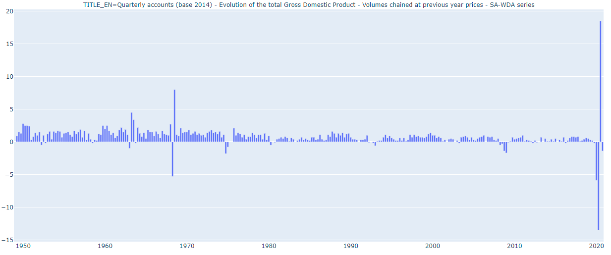

Overview¶
The pynsee package contains tools to easily download data and metadata from INSEE API. Using the API or the SDMX queries, get the data of more than 150 000 INSEE series. Have a look at the detailed API page with the following link. This package is a contribution to reproducible research and public data transparency.
Installation & Loading¶
# Get the development version from GitHub
pip install git+https://github.com/hadrilec/pynsee.git#egg=pynsee
# Subscribe to api.insee.fr and get your credentials!
# Beware : any change to the keys should be tested after having cleared the cache
# Please use : pynsee.utils.clear_all_cache to do so
import os
os.environ['insee_key'] = "my_key"
os.environ['insee_secret'] = "my_secret_key"
French GDP growth rate¶
{kind=link}
from pynsee.macro import *
import plotly.express as px
from plotly.offline import plot
# Subscribe to api.insee.fr and get your credentials!
# Beware : any change to the keys should be tested after having cleared the cache
# Please use : pynsee.utils.clear_all_cache to do so
import os
os.environ['insee_key'] = "my_insee_key"
os.environ['insee_secret'] = "my_insee_secret"
# get series key (idbank), for Gross domestic product balance
id = get_idbank_list("CNT-2014-PIB-EQB-RF")
id = id.loc[(id.FREQ == "T") &
(id.OPERATION == "PIB") &
(id.NATURE == "TAUX") &
(id.CORRECTION == "CVS-CJO")]
data = get_insee_idbank(id.idbank)
# plot with plotly
fig = px.bar(data, x = data.index, y = "OBS_VALUE",
facet_col = "TITLE_EN", facet_col_wrap=5)
fig.update_yaxes(matches=None)
plot(fig)
Population Map¶

from pynsee.local import get_map
from pynsee.macro import *
import geopandas as gpd
import pandas as pd
from pandas.api.types import CategoricalDtype
import matplotlib.cm as cm
import matplotlib.pyplot as plt
import descartes
map_file = get_map('departements')
map = gpd.read_file(map_file)
dataset_list = get_dataset_list()
id = get_idbank_list("TCRED-ESTIMATIONS-POPULATION")
id = id.loc[(id.AGE == "00-") &
(id.SEXE == "0") &
(id.REF_AREA.str.match("^D"))]
data = get_insee_idbank(id.idbank, lastNObservations=1)
data = data[['REF_AREA', 'OBS_VALUE']]
map['REF_AREA'] = 'D' + map['code']
map = map.to_crs(epsg=3035)
map["area"] = map['geometry'].area/ 10**6
map = map.to_crs(epsg=4326)
map = map.merge(data, how = 'left', on = 'REF_AREA')
map['density'] = map['OBS_VALUE'] / map["area"]
map.loc[map.density < 40, 'range'] = "< 40"
map.loc[map.density >= 20000, 'range'] = "> 20 000"
density_ranges = [40, 50, 70, 100, 120, 160, 200, 240, 260, 410, 600, 1000, 5000, 20000]
list_ranges = []
list_ranges.append( "< 40")
for i in range(len(density_ranges)-1):
min = density_ranges[i]
max = density_ranges[i+1]
range_string = "[{}, {}[".format(min, max)
map.loc[(map.density >= min) & (map.density < max), 'range'] = range_string
list_ranges.append(range_string)
list_ranges.append("> 20 000")
map['range'] = map['range'].astype( CategoricalDtype(categories=list_ranges, ordered=True))
fig, ax = plt.subplots(1,1,figsize=[10,10])
map.plot(column='range', cmap=cm.viridis,
legend=True, ax=ax,
legend_kwds={'bbox_to_anchor': (1.1, 0.8),
'title':'density per km2'})
ax.set_axis_off()
ax.set(title='Distribution of population in metropolitan France')
plt.show()
Poverty in Paris urban area¶

import os
os.environ['insee_key'] = "my_key"
os.environ['insee_secret'] = "my_secret_key"
from pynsee.local import *
import pandas as pd
import matplotlib.cm as cm
import matplotlib.pyplot as plt
import descartes
# get a list all data available : datasets and variables
metadata = get_local_metadata()
# geographic metadata
nivgeo = get_nivgeo_list()
# get geographic area list
area = get_area_list()
# get all communes in Paris urban area
areaParis = get_included_area('unitesUrbaines2020', ['00851'])
# get selected communes identifiers
code_com_paris = areaParis.code.to_list()
# get numeric values from INSEE database
dataParis = get_insee_local(dataset='GEO2020FILO2017',
variables = 'INDICS_FILO_DISP_DET',
geo = 'COM',
geocodes = code_com_paris)
#select poverty rate data, exclude paris commune
data_plot = dataParis.loc[dataParis.UNIT=='TP60']
data_plot = data_plot.loc[data_plot.CODEGEO!='75056']
#get communes limits
map_com = get_map('communes')
map_arr_mun = get_map('arrondissements-municipaux')
map_idf = pd.concat([map_com, map_arr_mun])
# merge values and geographic limits
mapparis = map_idf.merge(data_plot, how = 'right',
left_on = 'code', right_on = 'CODEGEO')
#plot
fig, ax = plt.subplots(1,1,figsize=[15,15])
mapparis.plot(column='OBS_VALUE', cmap=cm.viridis,
legend=True, ax=ax, legend_kwds={'shrink': 0.3})
ax.set_axis_off()
ax.set(title='Poverty rate in Paris urban area in 2017')
plt.show()
fig.savefig('poverty_paris_urban_area.svg',
format='svg', dpi=1200,
bbox_inches = 'tight',
pad_inches = 0)
How to avoid proxy issues ?¶
import os
os.environ['http_proxy'] = 'http://my_proxy_server:port'
os.environ['https_proxy'] = 'http://my_proxy_server:port'
Search in INSEE’s macroeconomic data (BDM)¶
-
pynsee.macro.get_dataset_list()¶ Download a full INSEE’s datasets list
- Returns:
DataFrame: contains 5 columns - idm Name.fr, Name.en, url, n_series
- Examples:
>>> insee_dataset = get_dataset_list()
-
pynsee.macro.get_idbank_list(*datasets, update=False)¶ Download an INSEE’s series key list for one or several datasets
- Args:
datasets (str) : datasets should be among the datasets list provided by get_dataset_list() update (bool, optional): Set to True, to update manually the metadata stored locally on the computer. Defaults to False.
- Raises:
ValueError: datasets should be among the datasets list provided by get_dataset_list()
- Returns:
DataFrame: contains dimension columns, series keys, dataset name
- Notes:
Some metadata is stored for 3 months locally on the computer. It is updated automatically
- Examples:
>>> idbank_ipc = get_idbank_list('IPC-2015', 'CLIMAT-AFFAIRES')
-
pynsee.macro.search_insee(pattern='.*')¶ Search a pattern among insee series (idbanks)
Notes: this function uses package’s internal data which might not be the most up-to-date.
- Args:
pattern (str, optional): String used to filter the idbank list. Defaults to “.*”, returns all series.
- Examples:
>>> from pynsee.macro import search_insee >>> search_all = search_insee() >>> search_paper = search_insee("pâte à papier") >>> search_paris = search_insee("PARIS") >>> search_survey_gdp = search_insee("Survey|GDP")
-
pynsee.macro.get_last_release()¶
-
pynsee.macro.get_column_title(dataset=None)¶ Get the title of a dataset’s columns
- Args:
dataset (DataFrame, optional): An INSEE dataset. Defaults to None, this returns all columns.
- Raises:
ValueError: Only one string (length one) ValueError: Dataset must belong to INSEE datasets list
- Examples:
>>> insee_all_columns = get_column_title() >>> balance_paiements_columns = get_column_title("BALANCE-PAIEMENTS")
Get macrodata from INSEE¶
-
pynsee.macro.get_insee_idbank(*idbanks, startPeriod=None, endPeriod=None, firstNObservations=None, lastNObservations=None, includeHistory=None, updatedAfter=None)¶ Get data from INSEE series idbank
- Args:
idbanks (str or list or pd.series) : some idbanks provided bu get_idbank_list() startPeriod (str, optional): start date of the data. endPeriod (str, optional): end date of the data. firstNObservations (int, optional): get the first N observations for each key series (idbank). lastNObservations (int, optional): get the last N observations for each key series (idbank). includeHistory (boolean, optional): boolean to access the previous releases (not available on all series). updatedAfter (str, optional): starting point for querying the previous releases (format yyyy-mm-ddThh:mm:ss)
- Returns:
DataFrame: contains the data, indexed by DATE and sorted by IDBANK
- Examples:
>>> from pynsee.macro import * >>> # inflation figures in France >>> df_idbank = get_idbank_list("IPC-2015") >>> df_idbank = df_idbank.loc[ >>> (df_idbank.FREQ == "M") & # monthly >>> (df_idbank.NATURE == "INDICE") & # index >>> (df_idbank.MENAGES_IPC == "ENSEMBLE") & # all kinds of household >>> (df_idbank.REF_AREA == "FE") & # all France including overseas departements >>> (df_idbank.COICOP2016.str.match("^[0-9]{2}$"))] # coicop aggregation level >>> # get data >>> data = get_insee_idbank(df_idbank.idbank)
-
pynsee.macro.get_insee_dataset(dataset, filter=None, startPeriod=None, endPeriod=None, firstNObservations=None, lastNObservations=None, includeHistory=None, updatedAfter=None)¶ Get dataset’s data from INSEE BDM database
- Args:
dataset (str): an INSEE dataset included in the list provided by get_dataset_list() filter (str, optional): Use the filter to choose only some values in a dimension. It is recommended to use it for big datasets. A dimension left empty means all values are selected. To select multiple values in one dimension put a “+” between those values. startPeriod (str, optional): start date of the data. endPeriod (str, optional): end date of the data. firstNObservations (int, optional): get the first N observations for each key series (idbank). lastNObservations (int, optional): get the last N observations for each key series (idbank). includeHistory (boolean, optional): boolean to access the previous releases (not available on all series). updatedAfter (str, optional): starting point for querying the previous releases (format yyyy-mm-ddThh:mm:ss)
- Raises:
ValueError: dataset should be in INSEE’s datasets list
- Returns:
DataFrame: contains the data
- Examples:
>>> ipc_data = >>> get_insee_dataset("IPC-2015", >>> filter = "M......ENSEMBLE...CVS.2015", >>> includeHistory = True, updatedAfter = "2017-07-11T08:45:00") >>> business_climate = get_insee_dataset("CLIMAT-AFFAIRES", lastNObservations = 1)